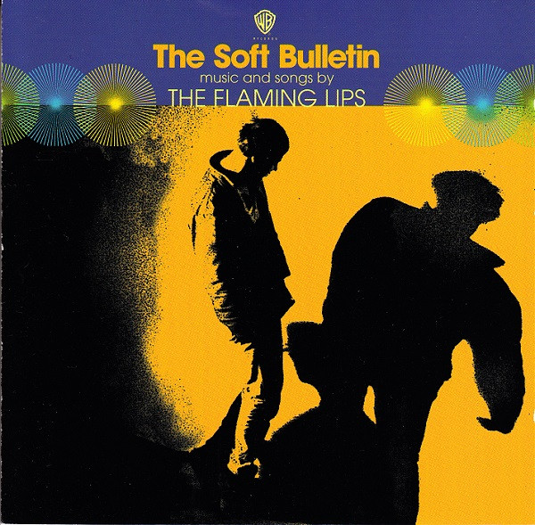
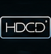

HDCD
The Soft Bulletin
The Flaming Lips

Format HDCDMedia: NM · Sleeve: VG+
CA$5.00
Discogs SuggestedCA$5.68
Discogs MedianCA$5.68
Discogs HighCA$5.68
- Physical Copy ID
- BB-HDCD-001
- Year
- 1999
- Label
- Warner Bros. Records
- Catalog #
- CDW 46876
- Country
- CACanada
- Genre / Style
- Electronic, Rock · Art Rock, Experimental, Indie Rock